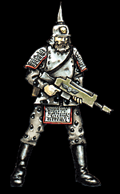

Imperial Forces |
Force Disposition Introduction |
Ork Forces |
|

The 3rd Semtexians were one of the last regiments to arrive on Armageddon, at a time when the Ork fleets were beginning to exercise their almost complete control over the system. The transports that held the seventeen batteries of Semtexians were forced to run a dangerous gauntlet of fast moving Ork raiders. Despite the presence Admiral Parol’s escorting Cruisers, several transports were destroyed as the Orks pressed in on all sides, taking eight full batteries of Semtexians with them, including four mechanised infantry companies.
Upon landing on the planet of Armageddon, Colonel Evarta, the highest ranking officer alive in the regiment, agreed to have the Semtexians immediately broken down into individual squadrons and dispersed throughout other Imperial Guard regiments. Alone, without the possibility of protection from their own mechanised companies, the Semtexian’s artillery batteries were extremely vulnerable to Ork attacks. Once they were moved to other formations, they were guaranteed at least a measure of protection.
Three more mechanised companies are currently en route to the Armageddon system, having been delayed by a diversion to counter Ork pirate raids on Umbridge 144 before Armageddon itself was attacked. It is the fond hope of Colonel Evarta that, provided his reinforcements can make their way through the Ork blockade intact, his regiment will be fully reformed and be once again capable of providing the massed artillery support that will send many Ork warbands reeling from the onslaught.
|
| ||||||||||||||||||||||||||||||||||||||||||||||||||
|
The Semtexians are a relatively new regiment, founded in 941 M41as a direct response to Ghazghkull's first invasion of Armageddon. This was the first full regiment that had ever been raised from the thinly populated mining world of Semtexia and the rise of their military strength was born of desperation during the Second Armageddon War. As the Ork hordes spread rapidly across Armageddon Secundus, many factories fell to their advance, including those responsible for the manufacture of artillery, thus depriving the Imperial forces of an important resource that was so desperately needed in battle.
With many fighting men from Armageddon's neighbouring worlds already committed to either the defence of Armageddon from this first Orkish assault, or in preparing their own systems for possible attack, it was left to the Semtexians with their limited resources to provide an army of reinforcements. Artillery pieces were hastily manufactured from all the raw materials that could be scraped in time from the planet's surface, with many mining and civilian vehicles cannibalised to provide necessary components. However the 1st Semtexians were woefully short of both men and equipment as they boarded merchant transports for the journey to Armageddon. They numbered barely four full batteries.
Once upon Armageddon, they were immediately deployed to the front lines of battle, that had been pushed as far back as Acheron Hive by the irresistible Ork tide. Their determined actions in repelling the Orks at Acheron with massed bombardment made the Hive impossible to assault and allowed the beleaguered defenders to hold out until the Space Marines arrived upon the world, spearheaded by the Blood Angels. This single battle ensured that all future regiments raised from Semtexia would continue in the Bombardier tradition.
Before the Semtexian Bombardiers were raised on this world, Semtexia was always regarded as a modest mining planet, providing meagre tithes to the Imperium. Its unique export of Kultrinium was useful to the manufacture of weapons on Armageddon, but it is only since Semtexia has started towards producing military units that the world has steadily increased in importance. With regiments to raise, more miners were transported to the planet, providing an exponential increase in the population. With the greater workforce, new ore strains were quickly found that have led to more complex and powerful artillery designs and also to the production of the now legendary Semtexian Sink Mines.
The Semtexian regiments are organised into batteries, with each battery being the rough equivalent of a standard armoured company. The majority are comprised of the heavier 'siege' type vehicles, such as Basilisks, Bombards and Manticores. There are, however, also a few lighter batteries of Griffons, Hydras and mechanised infantry companies that are typically used for the close support and defence of the otherwise vulnerable artillery pieces. In battle, the Semtexians work in close concert with supporting regiments and will construct immense earthworks with their Engineering Company to provide protection to the hundreds of artillery vehicles that will stretch in an imposing line for many miles behind the main war zones. There they will stay for the duration of the conflict, ready to receive fire support requests from Guard officers in combat or, alternatively, to launch a series of devastating massed bombardments upon enemy held ground to neutralise all effective opposition before other regiments move in to crush any remaining resistance. Their method of warfare means that the regiments is extremely vulnerable against a mobile enemy or an army that is capable of launching lightning fast strikes that penetrate defensive lines before any action can be taken. For this reason, the Semtexians will almost always operate in conjunction with other regiments. Relationships between the Semtexians and other Imperial Guard formations are usually very cordial, born of the fact that both realise that once battle is joined, the regiments must rely heavily upon one another.
| |||||||||||||||||||||||||||||||||||||||||||||||||||